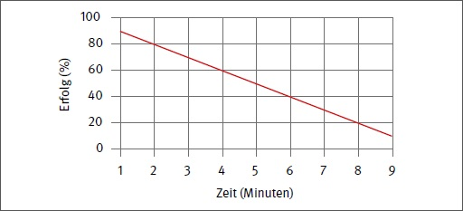

Der Unternehmer oder die Unternehmerin hat Ersthelferinnen oder Ersthelfer aus- und fortbilden zu lassen und zu benennen, die Aufgaben der Ersten Hilfe übernehmen.
Darüber hinaus muss das Unternehmen über eine ausreichende Anzahl aus- bzw. fortgebildeter Ersthelfer und Ersthelferinnen im Betrieb verfügen. Wird dieser Verpflichtung nicht nachgekommen, stellt das eine grobe Pflichtwidrigkeit dar.
§ 10 Abs. 2 Satz 4 Arbeitsschutzgesetz stellt es dem Unternehmer oder der Unternehmerin frei, selbst die Aufgaben eines Ersthelfers bzw. einer Ersthelferin oder eines Betriebssanitäters bzw. einer Betriebssanitäterin zu übernehmen, aber nur, wenn er oder sie über die notwendige Aus- und Fortbildung verfügt.
Grundsätzlich darf der Unternehmer oder die Unternehmerin nur solche Personen als Ersthelfer oder Ersthelferin für den Betrieb benennen und einsetzen, die durch eine vom Unfallversicherungsträger für die Aus- und Fortbildung in Erster Hilfe ermächtigte Stelle aus- und fortgebildet worden sind.
Nach den Bergverordnungen ausgebildete sogenannte Nothelfer bzw. Nothelferinnen sind den Ersthelfern bzw. Ersthelferinnen gleichwertig.
Darüber hinaus können Personen mit ärztlicher oder zahnärztlicher Approbation als aus- und fortgebildete Ersthelfer oder Ersthelferinnen nach § 26 Abs. 2 der DGUV Vorschrift 1 "Grundsätze der Prävention" angesehen werden.
Einer Ausbildung in Erster Hilfe bei einer von den Unfallversicherungsträgern ermächtigten Stelle steht die Tätigkeit mit sanitätsdienstlicher/rettungsdienstlicher Ausbildung bzw. die abgeschlossene Ausbildung in einem Beruf des Gesundheitswesens gleich. Dieser Personenkreis kann ohne zusätzliche Ausbildung als Ersthelfer bzw. Ersthelferin im Betrieb eingesetzt werden.
Personen mit sanitätsdienstlicher/rettungsdienstlicher Ausbildung oder einer Berufsausbildung mit integrierter gleichstellbarer Erste-Hilfe-Ausbildung sind insbesondere
Berufe des Gesundheitswesens sind insbesondere
Eine entsprechende regelmäßige Fortbildung ist bei Personen mit einer sanitätsdienstlichen oder rettungsdienstlichen Ausbildung oder einer entsprechenden Qualifikation in einem Beruf des Gesundheitswesens nur dann gegeben, wenn sie an vergleichbaren Fortbildungsveranstaltungen regelmäßig teilnehmen oder bei ihrer beruflichen Tätigkeit regelmäßig Erste-Hilfe-Maßnahmen durchführen. Ansonsten wird auch bei ihnen die Teilnahme an Erste-Hilfe-Fortbildungen in Abständen von längstens zwei Jahren erforderlich.
Steht Verletzten bei einem Notfall im Betrieb kein Ersthelfer oder keine Ersthelferin zur Verfügung, so kann der Unternehmer oder die Unternehmerin damit regresspflichtig werden.
Der Ersthelfer oder die Ersthelferin sind ausgebildete Laien, die als Erste am Ort des Geschehens Maßnahmen ergreifen können, um akute Gefahren für Leben und Gesundheit abzuwenden.
Die Aufgaben des Ersthelfers oder der Ersthelferin ergeben sich aus Art und Umfang der Ausbildung und der Weiterbildung (siehe Abschnitte 6.5 und 6.7). Sie dürfen auf dem Gebiet der Ersten Hilfe nur das tun, was ihrem Ausbildungsstand entspricht. Sie haben stets zu beachten, dass Erste Hilfe durch Laien nur Notbehelf, aber kein Ersatz für ärztliche Maßnahmen ist. In dem durch Aus- und Fortbildung gestellten Rahmen obliegt es ihnen, bei Notfällen die notwendigen Sofortmaßnahmen zu ergreifen und die Verletzten so lange zu betreuen, bis sanitätsdienstlich oder ärztlich qualifiziertes Fachpersonal die Betroffenen übernimmt.
Es ist zwar die wichtigste Aufgabe, bei einem Notfall einsatzbereit zur Stelle zu sein und zu helfen, es ist aber nicht die einzige. Der Ersthelfer bzw. die Ersthelferin hat auch in Fällen, die nicht den Grad einer lebensbedrohlichen Störung erreichen, Hilfe zu leisten. In Betrieben, in denen es weder Betriebssanitäter bzw. -sanitäterinnen gibt noch ein Betriebsarzt oder eine -ärztin ständig vor Ort ist, ist es Aufgabe des Ersthelfers oder der Ersthelferin, Verletzte mit leichteren Verletzungen im Rahmen der Ersten Hilfe zu versorgen und gegebenenfalls den Transport zur ärztlichen Behandlung in die Wege zu leiten.
Außerdem kann der Unternehmer bzw. die Unternehmerin sie mit der Aufgabe betrauen, die gemäß § 24 Abs. 6 der DGUV Vorschrift 1 "Grundsätze der Prävention" notwendigen Dokumentationen z. B. im Verbandbuch zu führen (siehe Abschnitt 4.4).
Ihnen kann der Unternehmer bzw. die Unternehmerin auch die Kontrolle über das nach § 25 Abs. 2 der DGUV Vorschrift 1 "Grundsätze der Prävention" vorzuhaltende Erste-Hilfe-Material übertragen.
Auf keinen Fall ist es Sache des Ersthelfers oder der Ersthelferin, Medikamente, z. B. Kopfschmerztabletten, an Betriebsangehörige auszugeben.
Bei jedem Unfall im Betrieb muss die Erste Hilfe gewährleistet werden können.
Damit jederzeit an jedem Unfallort und bei Notfällen sofort geholfen werden kann, muss in jedem Unternehmen von 2 bis 20 anwesenden Versicherten, d. h. in allen betrieblichen Bereichen, auf allen Bau- und Montagestellen und bei allen außerbetrieblichen Arbeiten, stets mindestens ein Ersthelfer oder eine Ersthelferin zur Verfügung stehen.
Sind mehr als 20 Beschäftigte in einem Unternehmen anwesend, so ist nach § 26 Abs. 1 der DGUV Vorschrift 1 "Grundsätze der Prävention" zu unterscheiden zwischen verwaltenden, d. h. kaufmännisch-büromäßigen Tätigkeiten einerseits und sonstigen Tätigkeiten andererseits, insbesondere Produktion und Handwerk. Tätigkeiten im Handelsbereich, die ähnliche Gefahren wie der eigentliche Produktionsbereich aufweisen, insbesondere Lagerei- und Transportarbeiten, zählen zu den sonstigen Unternehmensbereichen. In verwaltenden und Handelsunternehmen oder Unternehmensbereichen muss mindestens jeder 20. und bei den übrigen Tätigkeiten jeder 10. anwesende Beschäftigte Ersthelfer bzw. Ersthelferin sein.
Die Ersthelfer oder Ersthelferinnen sind unter Berücksichtigung der Art der Gefahren, der Struktur und der Ausdehnung des Betriebes so zu platzieren, dass sie bei jedem Unfall in der Nähe sind. Ist nicht auszuschließen, dass besondere Maßnahmen der Ersten Hilfe im Sinne des § 26 Abs. 4 der DGUV Vorschrift 1 "Grundsätze der Prävention" erforderlich werden, so sind Ersthelfer oder Ersthelferinnen einzusetzen, die entsprechend weitergebildet sind (Abschnitt 6.7). Das Unternehmen hat aufgrund seiner Gefährdungsbeurteilung zu prüfen, ob es mit der vorgeschriebenen Anzahl auskommt oder ob weitere in Erster Hilfe ausgebildete Personen benötigt werden. Sind in einem Betrieb oder auf einer Baustelle Beschäftigte verschiedener Unternehmen gleichzeitig tätig, so können diese wegen des Einsatzes der Ersthelfer bzw. Ersthelferinnen Absprachen treffen. Dies wäre z. B. auch der Fall, wenn ein beauftragtes Bewachungsunternehmen neben der eigentlichen Wachtätigkeit auch die Ersthelferaufgaben mit übernimmt.
Gewöhnlich gewinnen die Unternehmen die erforderliche Zahl an Ersthelfern oder Ersthelferinnen aus dem Kreis der eigenen Beschäftigten. Personen, die im Rahmen des Erwerbs des Führerscheins eine Schulung in Erster Hilfe absolviert haben, können auch als Ersthelfer oder Ersthelferinnen im Betrieb eingesetzt werden, falls die Schulung nicht länger als zwei Jahre zurückliegt und die Schulung von einer von den Unfallversicherungsträgern hierzu ermächtigten Ausbildungsstelle durchgeführt wurde. Nach § 19 Fahrerlaubnis-Verordnung ist für alle Führerscheinbewerber und -bewerberinnen eine 9 Unterrichtseinheiten umfassende Schulung in Erster Hilfe erforderlich, die inhaltlich identisch ist mit der betrieblichen Erste-Hilfe-Ausbildung. Somit ist deutschlandweit eine einheitliche Erste-Hilfe-Ausbildung eingeführt, sowohl für Ersthelferinnen und Ersthelfer im Betrieb als auch für die Bewerberinnen und Bewerber aller Führerscheinklassen. In kleineren Betrieben kann es evtl. schwer möglich sein, stets eigenes Personal als Ersthelfer oder Ersthelferin zur Verfügung zu haben, weil z. B. Aushilfen nur stundenweise beschäftigt oder unter den Versicherten niemand im Sinne von § 28 der DGUV Vorschrift 1 "Grundsätze der Prävention" geeignet ist, um als Ersthelfer oder Ersthelferin eingesetzt werden zu können. In diesem Fall muss auf andere Personen zurückgegriffen werden.
Der Ersthelfer oder die Ersthelferin ist keine Person, die im Betrieb ausschließlich für die Anwendung der Ersten Hilfe zur Verfügung steht. Beschäftigte im Unternehmen üben die Funktion vielmehr in Erfüllung einer arbeitsvertraglichen Nebenpflicht aus. Die Hauptpflicht aus dem Arbeitsvertrag hat die Arbeitsleistung zum Gegenstand. Die Erste-Hilfe-Leistung erfolgt in Erfüllung der Treuepflicht, die in § 28 der DGUV Vorschrift 1 "Grundsätze der Prävention" diesbezüglich konkretisiert ist.
Die Treuepflicht ist arbeitnehmerseits zwar das Gegenstück zur Fürsorgepflicht des Arbeitgebers. Die Unmöglichkeit, die Treuepflicht zu erfüllen, entlässt die Arbeitgeberseite aber nicht aus der Verpflichtung zur Fürsorge. Diese ist in § 24 Abs. 1 der DGUV Vorschrift 1 "Grundsätze der Prävention" dahingehend bestimmt, dass sie für die Anwesenheit von Ersthelfern oder Ersthelferinnen zu sorgen hat. Da in der Unfallverhütungsvorschrift nicht festgelegt ist, dass die im Betrieb beschäftigten Versicherten die Ersthelfer oder Ersthelferinnen stellen müssen, kann diese Aufgabe auch anderen Personen übertragen werden, z. B. dem aufgrund eines Dienstverhältnisses selbstständig tätigen Geschäftsführer bzw. der Geschäftsführerin einer GmbH.
Soweit auf solche Personen nicht zurückgegriffen werden kann, muss gleichsam als "Notnagel" der Unternehmer oder die Unternehmerin selbst einspringen. Die Verpflichtung, sich als Ersthelfer bzw. Ersthelferin zur Verfügung zu stellen, basiert unmittelbar auf der Fürsorgepflicht.
Die DGUV Vorschrift 1 "Grundsätze der Prävention" und auch § 10 Abs. 2 Satz 5 Arbeitsschutzgesetz, die es dem Arbeitgeber oder der Arbeitgeberin freistellen, die Aufgaben eines Ersthelfers oder einer Ersthelferin nach entsprechender Ausbildung selbst wahrzunehmen, enthalten zwar keine diesbezügliche Verpflichtung.Die Konkretisierung der Fürsorgepflicht auf die Erste-Hilfe-Leistung durch den Unternehmer oder die Unternehmerin selbst ergibt sich aber zwingend aus ihrer allgemeinen Verpflichtung zur Sicherstellung der Ersten Hilfe im Betrieb. Falls der Unternehmer oder die Unternehmerin sich als Ersthelfer oder Ersthelferin einsetzen will, gelten für sie die Bestimmungen der DGUV Vorschrift 1 "Grundsätze der Prävention" über die Erste-Hilfe-Aus- und Fortbildung sowie über die notwendige Anwesenheit von Ersthelfern und Ersthelferinnen.
Eine Reduzierung der Anzahl an Ersthelfern oder Ersthelferinnen darf nur mit Zustimmung und im Einvernehmen mit dem zuständigen Unfallversicherungsträger erfolgen und die Herabsetzung nicht zum Nachteil der Verletzten oder Erkrankten führen.
Von der vorgeschriebenen Zahl der Ersthelfer oder Ersthelferinnen kann nur abgewichen werden, wenn das betriebliche Rettungswesen hinsichtlich personeller, materieller und organisatorischer Mindestmaßnahmen über die Anforderungen der DGUV Vorschrift 1 hinausgeht. Neben einem gut durchorganisierten betrieblichen Rettungswesen ist für die Herabsetzung der Zahl der Ersthelfer oder Ersthelferinnen ein geringeres Gefährdungspotenzial Voraussetzung.
Folgende Umstände sind zu bedenken, wenn von der Mindestzahl abgewichen werden soll. Bei einer primären Störung des Herzens, z. B. bei einem Herzkammerflimmern ausgelöst durch einen Herzinfarkt, sinkt die Überlebenschance um ca. 10 % je Minute. Bereits nach drei bis fünf Minuten beginnen die Gehirnzellen abzusterben.
Je eher eingegriffen wird, desto größer ist die Chance
Je eher Erste Hilfe geleistet wird, desto kürzer können auch die Dauer des Krankenhausaufenthaltes und umso niedriger die Kosten der Heilbehandlung sowie ggf. der Rentenleistungen sein.
Rettungschancen nach Eintritt einer hochgradigen Störung oder nach Aussetzen einer Lebensfunktion in Abhängigkeit vom Zeitpunkt der Erste-Hilfe-Leistung

Überlebenswahrscheinlichkeit bei Herzkammerflimmern in Abhängigkeit von der Zeit bis zur Defibrillation (geglättet; nicht lineare Funktion)
Da bei einem Notfall Sekunden entscheidend sein können, darf im Rahmen der Reduzierung auf Ersthelfer oder Ersthelferinnen nur insoweit verzichtet werden, als ihre Aufgaben durch mobile betriebseigene Rettungseinheiten übernommen werden können. Bei der Versorgung von Notfallpatienten bzw. -patientinnen darf kein zeitliches Vakuum entstehen. Folgende Fragen müssen beantwortet sein:
Wie viel Zeit vergeht, bis
Setzt man für jeden dieser Vorgänge eine Minute an, so hätte eine Person mit einem Kreislaufstillstand kaum eine Überlebenschance, wenn nicht bereits vor Eintreffen der Rettungseinheit ein Ersthelfer oder eine Ersthelferin Entscheidendes geleistet hätte.
Eine wirksamere Organisation des betrieblichen Rettungswesens lässt sich insbesondere erreichen, wenn
Die Herabsetzung der vorgeschriebenen Anzahl an Ersthelfern oder Ersthelferinnen darf nie zum Nachteil der Verletzten gereichen.
Eine Herabsetzung der Zahl kann zusätzlich damit begründet sein, dass eine Versorgung der Verletzten in der werkseigenen Ambulanz erfolgt. Bei leichten Verletzungen, die unterhalb der Schwelle lebensbedrohlicher Störungen liegen, brauchen Versicherte nicht durch den Ersthelfer oder die Ersthelferin an Ort und Stelle versorgt zu werden, vielmehr kann ohne Gefahr die werkseigene Ambulanz aufgesucht werden. Es muss lediglich sichergestellt sein, dass sich alle in Betracht kommenden Verletzten in der Ambulanz versorgen lassen.
Neben einem gut durchorganisierten betrieblichen Rettungswesen ist für die Herabsetzung der Zahl der Ersthelfer oder Ersthelferinnen ein geringes Gefährdungspotenzial Voraussetzung.
Dabei sind zwei Gesichtspunkte zu berücksichtigen:
Die Belastung des Betriebes spiegelt sich in den feststellbaren Unfallquoten wider. Möglichen Unfallschwerpunkten oder auch Tätigkeiten, die von einzelnen oder kleinen Gruppen Versicherter an abgelegenen Stellen oder außerhalb des Betriebes durchgeführt werden, muss besondere Beachtung geschenkt werden.
Generell sollte die Herabsetzung in Produktions- oder Handwerksbetrieben nicht zu einer geringeren Anzahl an Ersthelfern oder Ersthelferinnen als 5 % der anwesenden Beschäftigten führen. Werden z. B. in einem Raum 100 Versicherte beschäftigt, so sollten mindestens fünf Ersthelfer oder Ersthelferinnen anwesend sein. Ist dagegen ein Betrieb unübersichtlich in mehrere Stockwerke und Räume gegliedert, so dürften 5 % nicht ausreichen. Damit es keine Betriebe erster und zweiter Klasse gibt, muss überall dafür gesorgt sein, dass bei einem Unfall ein Ersthelfer oder eine Ersthelferin sofort zur Verfügung steht. Es darf keine Qualitätsabstufungen in der Ersten Hilfe geben.
In Bürobereichen, bei denen die Mindestquote für die Zahl anwesender Ersthelfer oder Ersthelferinnen bereits nach § 26 Satz 1 Nr. 2 Buchstabe a) der DGUV Vorschrift 1 "Grundsätze der Prävention" nur 5 % beträgt, ist das geringe Gefährdungspotenzial, d. h. die geringe Unfallhäufigkeit bereits berücksichtigt, sodass eine Herabsetzung der vorgeschriebenen Zahl nur in Ausnahmefällen in Betracht kommt. So ist es denkbar, dass die Zahl der Ersthelfer oder Ersthelferinnen in einem Großraumbüro mit 100 Personen von 5 % auf 3 % im Einvernehmen mit dem Unfallversicherungsträger herabgesetzt werden kann, wenn der Raum äußerst übersichtlich und die Anwesenheit von drei Ersthelfern oder Ersthelferinnen gesichert ist.
Die Verantwortung für die Festlegung einer von der Forderung der Unfallverhütungsvorschrift abweichenden Zahl der Ersthelfer und Ersthelferinnen trägt der Unternehmer oder die Unternehmerin.
Nach § 3 Abs. 1 Nr. 1 Buchstabe e) und Nr. 4 Arbeitssicherheitsgesetz hat der Betriebsarzt oder die Betriebsärztin den Unternehmer oder die Unternehmerin bei der Organisation der Ersten Hilfe im Betrieb zu beraten und bei der Einsatzplanung und Schulung der Helfer in Erster Hilfe mitzuwirken.
Kommt der Unternehmer bzw. die Unternehmerin zu dem Ergebnis, dass eine Herabsetzung der Zahl der Ersthelfer oder Ersthelferinnen zu verantworten ist, so genügt es, dass er oder sie sich mit dem für den Betrieb zuständigen Unfallversicherungsträger ins Benehmen setzt und das Einvernehmen mit dem zuständigen Unfallversicherungsträger nach § 26 Abs. 1 DGUV Vorschrift 1 einholt. Eine förmliche Ausnahmegenehmigung im Sinne von § 14 Abs. 1 der DGUV Vorschrift 1 "Grundsätze der Prävention" sieht die Vorschrift nicht vor.
Jeder Verletzte hat Anspruch auf Erste Hilfe. Helfen will gelernt sein. Deswegen braucht jeder Ersthelfer bzw. jede Ersthelferin eine fundierte Ausbildung.
Die Ersthelferausbildung ist eine Grundausbildung, die den Ersthelfer bzw. die Ersthelferin in die Lage versetzt, in der Regel bei allen im Betrieb vorkommenden arbeitsbedingten Verletzungen, vom kleinen Unfall bis zum Notfall, aber auch bei lebensbedrohlichen Situationen aufgrund solcher Erkrankungen, die nicht in einem inneren Zusammenhang mit der betrieblichen Tätigkeit stehen, die notwendigen vorläufigen Maßnahmen zu ergreifen. Soweit die Ersthelfer und Ersthelferinnen in einzelnen Betrieben die an sie zu stellenden Anforderungen allein aufgrund der ihnen durch die Grundausbildung vermittelten Fertigkeiten nicht erfüllen können, müssen sie zusätzlich ausgebildet werden (siehe Abschnitt 6.7).
Der Ersthelfer bzw. die Ersthelferin ist im Ernstfall häufig auf sich allein gestellt; er oder sie kann oftmals niemand anderen um Rat bitten. Verschiedene Situationen, die Anlässe für Erste-Hilfe-Leistungen sind, bilden deswegen die Ausgangspunkte für die einzelnen Lehrinhalte. Die zu vermittelnden Anwendungen der Ersten Hilfe werden nicht nur dargestellt und besprochen, sondern intensiv geübt. Ziel ist es, den Laien Kenntnisse und Fertigkeiten so zu vermitteln, dass sie die nötige Sicherheit für den Ernstfall, insbesondere für die Durchführung der lebensrettenden Maßnahmen, erhalten. Anhand bestimmter äußerer Erscheinungsbilder oder leicht feststellbarer Symptome wie Blutungen, Atemstillstand, Kreislaufstillstand, Bewusstlosigkeit sollen sie die Gefahr für Gesundheit und Leben der Verletzten oder Patienten bzw. Patientinnen erkennen und ihr zielsicher begegnen können.
Die Ausbildung zum Ersthelfer bzw. zur Ersthelferin hat in Übereinstimmung mit Anhang 1 des DGUV Grundsatzes 304-001 "Ermächtigung von Stellen für die Aus- und Fortbildung in Erster Hilfe" folgende Themen zum Gegenstand:
Die Ausbildung erstreckt sich mit Ausnahme des Gerätes zur automatisierten Defibrillation (AED) nicht auf die Verwendung von Hilfsmitteln, wie Erste-Hilfe-Geräte, medizinische Geräte, Krankentragen, sowie die Verabreichung von Medikamenten (z. B. Antidote). Lediglich die Verwendung des in den Verbandkästen nach DIN 13 157 und DIN 13 169 enthaltenen Erste-Hilfe-Materials ist Gegenstand der Ausbildung.
Die Ausbildung zum Ersthelfer bzw. zur Ersthelferin erfolgt mittels des Lehrganges "Ausbildung in Erster Hilfe" (Erste-Hilfe-Lehrgang), der 9 Unterrichtseinheiten umfasst, wobei eine Unterrichtseinheit 45 Minuten beträgt.
An dem Erste-Hilfe-Lehrgang sollen in der Regel mindestens 10 und nicht mehr als 15 Versicherte teilnehmen. Die Teilnehmerzahl darf jedoch, auch bei Anwesenheit eines Ausbildungshelfers bzw. einer -helferin, 20 Personen nicht übersteigen.
Die Ausbildung in Erster Hilfe liegt gemäß § 26 Abs. 2 der DGUV Vorschrift 1 "Grundsätze der Prävention" in den Händen von dazu speziell ermächtigten Stellen. Neben den bekannten Hilfsorganisationen (ASB, DLRG, DRK, JUH und MHD) können auch zusätzlich die von den Unfallversicherungsträgern dazu ermächtigten Stellen Erste-Hilfe-Ausbildungen im Sinne dieser Unfallverhütungsvorschrift für Betriebe durchführen. Der Unternehmer bzw. die Unternehmerin ist gehalten, als Ersthelfer bzw. Ersthelferin Personen einzusetzen, die von einer dieser ermächtigten Stellen aus- und fortgebildet sind.
Die Voraussetzungen für die Ermächtigung sind in der Anlage 2 zu § 26 Abs. 2 der DGUV Vorschrift 1 "Grundsätze der Prävention" geregelt (siehe Anhang 3).
Im Wesentlichen müssen folgende Forderungen erfüllt sein:
Die Ermächtigung muss schriftlich beantragt werden. Den Antrag hat der Unternehmer bzw. die Unternehmerin beim Unfallversicherungsträger zu stellen. Dieser leitet den Antrag weiter an die VBG (Verwaltungs-Berufsgenossenschaft), Bezirksverwaltung Würzburg, die von allen gewerblichen Berufsgenossenschaften sowie einem Großteil der Unfallkassen mit der Durchführung des Ermächtigungsverfahrens gemäß § 88 Sozialgesetzbuch X beauftragt ist. Die Ermächtigung wird nach Prüfung durch die sogenannte "Qualitätssicherungsstelle Erste Hilfe" unter dem Vorbehalt des Widerrufs und befristet erteilt. Der Unternehmer bzw. die Unternehmerin hat jede Veränderung der betrieblichen Verhältnisse, welche die Voraussetzungen für die Ermächtigung gebildet haben, unverzüglich der Qualitätssicherungsstelle anzuzeigen. Nähere Angaben zum Ermächtigungsverfahren enthält auch der DGUV Grundsatz 304-001 "Ermächtigung von Stellen für die Aus- und Fortbildung in der Ersten Hilfe".
Aktuelle Listen der ermächtigten Stellen können bei den Unfallversicherungsträgern bzw. im Internet abgerufen werden (www.dguv.de/fb-erstehilfe).
Die Träger der gesetzlichen Unfallversicherung können die Aus- und Fortbildung in Erster Hilfe auch selbst vornehmen, wie aus § 23 Abs. 2 Sozialgesetzbuch VII zu entnehmen ist.
Die Betriebsangehörigen, die zu Ersthelfern oder Ersthelferinnen ausgebildet werden sollen, werden in der Regel vom Unternehmer oder von der Unternehmerin zum Erste-Hilfe-Lehrgang bei einer ermächtigten Stelle schriftlich angemeldet, die ihren Sitz am Ort des Unternehmens oder in seiner Nähe hat. Für die Anmeldung und Bestätigung der Teilnehmer oder Teilnehmerinnen an der Aus- und Fortbildung für betriebliche Ersthelfer oder Ersthelferinnen stellen die Unfallversicherungsträger ein Formular zur Verfügung. Dieses Formular kann über den Internetauftritt des Fachbereiches "Erste Hilfe" der Deutschen Gesetzlichen Unfallversicherung (www.dguv.de/fb-erstehilfe) heruntergeladen werden.
Mitzuteilen sind:
Bei der Anmeldung ist außerdem anzugeben, dass sie für die Teilnahme an einer Erste-Hilfe-Ausbildung oder an einer Erste-Hilfe-Fortbildung, dem sogenannten Erste-Hilfe-Training (siehe Abschnitt 6.6), erfolgt. Die Ausbildungsstelle gibt dem Unternehmen Ort und Zeit des Lehrganges bekannt. Die Kurse finden in der Regel am Sitz der ausbildenden Stelle statt. Wenn eine bestimmte Zahl von Teilnehmern oder Teilnehmerinnen erreicht wird, kann mit der Ausbildungsstelle auch vereinbart werden, dass der Lehrgang während der Arbeitszeit in passenden Räumlichkeiten im Betrieb durchgeführt wird. Nach Abschluss des Lehrganges bestätigt die ermächtigte Stelle dem zuständigen Unfallversicherungsträger schriftlich die Aus- bzw. Fortbildung der betreffenden Lehrgangsteilnehmer oder -teilnehmerinnen zu Ersthelfern bzw. Ersthelferinnen auf dem Anmeldeformular "Aus- und Fortbildung für betriebliche Ersthelfer oder Ersthelferinnen". Dieses bildet die Grundlage für die direkte Abrechnung der Lehrgangsgebühren der ermächtigten Stelle mit dem zuständigen Unfallversicherungsträger.
Über die Teilnahme am Erste-Hilfe-Lehrgang stellt die Qualitätssicherungsstelle Erste Hilfe der Unfallversicherungsträger der ermächtigten Stelle eine Dateivorlage in elektronischer Form für die Teilnahmebescheinigung zur Verfügung, auf der diese die erfolgreiche Teilnahme an der Ausbildung in Erster Hilfe bestätigt. Die ausbildende Stelle händigt dem Teilnehmer bzw. der Teilnehmerin die Teilnahmebescheinigung bei erfolgreichem Lehrgangsabschluss direkt aus.
Der Ersthelfer oder die Ersthelferin hat die Teilnahmebescheinigung dem eigenen Betrieb vorzulegen, damit dieser die Ausbildung registrieren und den Termin für die Fortbildung überwachen kann.
Die Ausbildung in der Ersten Hilfe durch eine allein nach § 68 der Fahrerlaubnisverordnung anerkannte Stelle reicht nicht aus, um als Ersthelfer im Sinne des § 26 Abs. 2 der DGUV Vorschrift 1 "Grundsätze der Prävention" im Betrieb eingesetzt werden zu können. Dazu bedarf die ausbildende Stelle zusätzlich der Ermächtigung durch die Unfallversicherungsträger.
6.5.4.1 Grundsatz
Kostenpflichtig ist grundsätzlich der Unternehmer oder die Unternehmerin, dem oder der die Verpflichtung, die erforderlichen Arbeitschutzmaßnahmen zu treffen und damit die Verantwortung für die Bestellung von Ersthelfern bzw. Ersthelferinnen im Betrieb gesetzlich nach den §§ 3 und 10 Arbeitsschutzgesetz sowie § 21 Abs. 1 Sozialgesetzbuch VII und im Einzelnen aufgrund § 15 Abs. 1 Satz 1 Nr. 5 zugewiesen sind. Die Kosten für die Arbeitsschutzmaßnahmen gemäß § 3 Abs. 3 Arbeitsschutzgesetz sowie § 2 Abs. 5 der DGUV Vorschrift 1 "Grundsätze der Prävention" dürfen nicht den Beschäftigten auferlegt werden.
Die Gesamtkosten der Aus- und Fortbildung in der Ersten Hilfe spalten sich in zwei Teilbereiche auf, nämlich
6.5.4.2 Lehrgangsgebühren
Den Unfallversicherungsträgern obliegt nach § 23 Abs. 1 Sozialgesetzbuch VII die "Sorge" für die Aus- und Fortbildung in der Ersten Hilfe. Das bedeutet nicht, dass sie die Durchführung der entsprechenden Maßnahmen zu übernehmen haben, aber, dass sie eine besondere Verantwortung für die Aus- und Fortbildung in der Ersten Hilfe der Versicherten tragen. Dies wird in § 23 Abs. 1 Satz 3 Sozialgesetzbuch VII besonders hervorgehoben; danach haben sie Unternehmen und Versicherte zur Teilnahme an Aus- und Fortbildungslehrgängen anzuhalten. Dieser Aufgabe kommen die Unfallversicherungsträger durch Abschluss diesbezüglicher Vereinbarungen mit den ermächtigten Stellen und insbesondere durch die Übernahme der
anfallenden Lehrgangskosten nach. Die schriftliche Vereinbarung umfasst Art und Umfang der Ausbildungsleistungen und die Höhe der Lehrgangsgebühren. Neu ermächtigte Stellen zur Ausbildung in Erster Hilfe schließen ebenfalls einen entsprechenden Vertrag.
Die Lehrgangsgebühr wird als Pauschgebühr je Teilnehmer/Teilnehmerin gezahlt, mit der alle Aufwendungen der Ausbildungsstellen für den Lehrgang abgegolten sind. Die als Kosten pro Teilnehmer/Teilnehmerin umgelegten Pauschgebühren enthalten die Aufwendungen für die Entwicklung und Erprobung des Lehrstoffes, die Beschaffung der Unterrichtsmittel, das Vorhalten des Schulungspersonals (einschließlich deren Fahrt- und Reisekosten) und der Schulungsräume, Steuerung und Durchführung der Aus- und Fortbildungsprogramme sowie auch die Aushändigung einer Teilnehmerunterlage, wie z. B. DGUV Information 204-007 "Handbuch zur Ersten Hilfe" usw. Die Ausbildungsstellen sind damit gehalten, keine zusätzlichen Forderungen an die Träger der gesetzlichen Unfallversicherung, die Unternehmen oder die Versicherten zu stellen. Die ausbildenden Stellen rechnen direkt mit den Unfallversicherungsträgern ab.
6.5.4.3 Vergütung der Unterrichtszeiten durch das Unternehmen
Die Frage, ob Lehrgangsteilnehmer oder -teilnehmerinnen für den lehrgangsbedingten Arbeitszeitausfall oder den über die gewöhnliche Arbeitszeit hinausgehenden Zeitaufwand von ihrem Unternehmen eine Vergütung erhalten, beantwortet sich nach den Bestimmungen und Prinzipien des Arbeitsrechts.
§ 23 Abs. 3 Sozialgesetzbuch VII stellt klar, dass bei lehrgangsbedingtem Arbeitsausfall das Arbeitsentgelt fortzuzahlen hat. Dies gilt nicht nur bei eigenen Maßnahmen des Trägers der gesetzlichen Unfallversicherung, sondern auch wenn Versicherte während der Arbeitszeit zum Beispiel an einem Erste-Hilfe-Lehrgang einer ermächtigten Stelle teilnehmen. Auf die Frage nach einem Entgeltanspruch für den außerhalb der Arbeitszeit liegenden Zeitaufwand, zum Beispiel bei Ausbildung von Schichtarbeitern an arbeitsfreien Tagen oder von anderen Arbeitnehmern oder Arbeitnehmerinnen an arbeitsfreien Wochenenden oder nach Arbeitsschluss geht das Sozialgesetzbuch VII nicht ein, da damit nicht das Sozial-, sondern das Arbeitsrecht angesprochen wird. Die Frage stellt sich sowohl für die von den Unfallversicherungsträgern durchgeführten Aus- und Fortbildungsmaßnahmen als auch für die Veranstaltungen der ermächtigten Stellen. Soweit tarifrechtliche Betriebsvereinbarungen oder Arbeitsverträge keine entsprechenden Regelungen enthalten, spricht einiges für eine Vergütungspflicht des Arbeitgebers. Grundsatz ist, dass Aus- und Fortbildung im Interesse des Unternehmens nicht zulasten der Versicherten gehen dürfen. Soweit nämlich jener oder jene Versicherte anhält, das heißt, anweist oder sein oder ihr Einverständnis damit erklärt, dass sie sich in der Ersten Hilfe ausbilden lassen, um im Betrieb als Ersthelfer oder Ersthelferin zur Verfügung zu stehen, handeln die Versicherten in Erfüllung der Pflichten des Unternehmers oder der Unternehmerin; denn er bzw. sie ist es schließlich, der bzw. die nach § 26 Abs. 1 der DGUV Vorschrift 1 "Grundsätze der Prävention" dem Betrieb Ersthelfer oder Ersthelferinnen zur Verfügung zu stellen hat. Wer Personal zur Verfügung halten muss, das im Betrieb bestimmte besondere Aufgaben wahrnehmen soll, muss dafür sorgen, dass es entsprechend ausgebildet ist. Deswegen ist in der Verpflichtung des Unternehmers oder der Unternehmerin nach § 26 Abs. 2 und 3 der DGUV Vorschrift 1 "Grundsätze der Prävention" die Sorge für die Aus- und Fortbildung in der Ersten Hilfe enthalten. Das Gleiche gilt nach den § 3 Abs. 1 und § 10 Abs. 2 Arbeitsschutzgesetz.
In vielen Fällen finden die Erste Hilfe-Lehrgänge nicht während der Arbeitszeit statt, sodass die Versicherten gezwungen sind, sich während der Freizeit aus- und fortbilden zu lassen. Da sie keinen Einfluss auf die terminliche Abhaltung der Lehrgänge haben, erscheint es sachlich nicht gerechtfertigt, Beschäftigte, die während ihrer Arbeitszeit geschult werden und einen Anspruch auf Entgeltfortzahlung haben, anders zu behandeln als Beschäftigte, die aus von ihnen nicht zu vertretenen Gründen die Ausbildung außerhalb ihrer Arbeitszeit durchlaufen müssen. Insofern wird unter dem Gesichtspunkt der Gleichbehandlung in der Regel ein Anspruch auf Freistellung oder ein entsprechender finanzieller Ausgleich vom Arbeitgeber bzw. der Arbeitgeberin geschuldet sein. Ohne einen solchen Zeitausgleich würde es für die Unternehmen sicher ungleich schwerer, Betriebsangehörige als Ersthelfer oder Ersthelferinnen zu gewinnen.
Der Ausgleich kann auch durch Zahlung des entsprechenden Entgelts erfolgen. Etwaige arbeitsvertragliche Vereinbarungen sind zu beachten.
6.5.4.4 Fahr-, Verpflegungs- und Unterbringungskosten
Aus § 23 Abs. 2 Satz 1 Sozialgesetzbuch VII folgt, dass in den Fällen, in denen die Unfallversicherungsträger nicht selbst die Aus- und Fortbildungsmaßnahmen durchführen, die Unternehmen auch die anfallenden Fahrkosten und – soweit erforderlich – die Verpflegungs- und Unterbringungskosten zu übernehmen haben.
6.5.4.5 Maßnahmen der Unfallversicherungsträger
Sollte ein Unfallversicherungsträger die Aus- und Fortbildung Betriebsangehöriger in der Ersten Hilfe, z. B. auch im Rahmen einer größeren Schulungsmaßnahme für Führungskräfte auf dem Gebiet der Arbeitssicherheit, selbst durchführen, so gilt § 23 Abs. 2 Satz 1 Sozialgesetzbuch VII, d. h., er hat die unmittelbaren Kosten seiner Aus- und Fortbildungsmaßnahme sowie die erforderlichen Fahr-, Verpflegungs- und Unterbringungskosten zu tragen. Ausgenommen ist die Vergütung der lehrgangsbedingten Ausfallzeiten.
Die Fortbildung der Ersthelfer oder Ersthelferinnen dient der Auffrischung der Kenntnisse und Fertigkeiten.
Der Einsatzfall ist für Ersthelfer oder Ersthelferinnen in der Regel ein seltenes Ereignis. Da sie in der Praxis wenig Gelegenheit haben, Erfahrungen zu sammeln, kann nur durch wiederholte Schulung ihrer Verantwortung Rechnung getragen werden. Ihre Kenntnisse und Fertigkeiten müssen durch Auffrischung erhalten und aktualisiert werden.
Zur Fortbildung der Ersthelfer oder Ersthelferinnen bieten die ermächtigten Stellen das 9 Unterrichtseinheiten umfassende sogenannte "Erste-Hilfe-Training" an. Die Erste-Hilfe Fortbildung fokussiert sich auf die Sicherung der in der Grundausbildung erworbenen Kompetenzen. Eine Reihe von "obligatorischen" Themen müssen von den Teilnehmenden an einer Fortbildung absolviert werden. Bei der Fortbildung besteht zusätzlich die Möglichkeit, auf spezifische Themen einzugehen. Die Auswahl der hierfür "optional" zur Verfügung stehenden Themen erfolgt anhand des betrieblichen Bedarfs bzw. der Anforderung der Teilnehmenden.
Die obligatorischen Themen umfassen im Einzelnen folgende Maßnahmen:
| – | Bewusstlosigkeit |
| – | Atemstillstand |
| – | Kreislaufstillstand |
Folgende optionale Themen sind möglich:
Fortbildungsmaßnahmen können nur dann erfolgreich sein, wenn auf vorhandenen Kenntnissen aufgebaut werden kann. Deswegen muss gemäß § 26 Abs. 3 der DGUV Vorschrift 1 "Grundsätze der Prävention" dafür gesorgt werden, dass die Fortbildung in der Regel in Zeitabständen von zwei Jahren nach einer vorausgegangenen Teilnahme an einem Erste-Hilfe-Lehrgang oder -Training durchgeführt und abgeschlossen wird.
Im Unternehmen ist darauf zu achten, dass das Erste-Hilfe-Training rechtzeitig besucht wird. Eine frühzeitige Anmeldung ist erforderlich. Es ist darauf zu achten, dass die Zwei-Jahres-Frist nicht überschritten wird. Sollte eine rechtzeitige Teilnahme am Erste-Hilfe-Training aus Gründen, die das Unternehmen oder die Versicherten zu vertreten haben, nicht erfolgen können, kommt eine Fortbildung in der Regel nicht in Betracht; eine verspätete Teilnahme am Training wird in der Regel abgelehnt. Die erneute Teilnahme an einem Erste-Hilfe-Lehrgang wird in diesen Fällen notwendig sein. Eine Benennung als Ersthelfer oder Ersthelferin im Betrieb ist dann erst nach erneuter Ausbildung möglich.
Das Erste-Hilfe-Training wird von den ermächtigten Stellen aus organisatorischen Gründen und mit dem Ziel, die Lehrinhalte zusammenhängend und verknüpft durchzunehmen, als geschlossene Einheit angeboten. Wenn jedoch Unternehmen den Lehrgang im eigenen Betrieb für ihre Mitarbeiter und Mitarbeiterinnen durchführen lassen und die Teilnahme derselben überwachen, sind die ermächtigten Stellen bereit, das Erste-Hilfe-Training in zwei Abschnitte zu teilen. Die beiden Fortbildungsabschnitte müssen jedoch in einem der Sache angemessenen zeitlichen Zusammenhang abgehalten werden.
Besteht wegen besonderer Gefährdung im Einzelfall ein erhöhter Aus- und Fortbildungsbedarf, z. B. wenn an unter Spannung stehenden elektrischen Anlagen oder Anlageteilen gearbeitet wird oder andere Tätigkeiten verrichtet werden, wie Arbeiten an oder in Gewässern, bei denen nach Unfällen die Anwendung der Wiederbelebung erforderlich werden kann, kann eine jährliche Teilnahme an dem Erste-Hilfe-Training geprüft werden.
Ersthelfer oder Ersthelferinnen können in dem Zwei-Jahres-Zeitraum auch erneut an einem Erste-Hilfe-Lehrgang teilnehmen. Das Unternehmen sollte den Ersthelfern oder den Ersthelferinnen diesen Schritt ermöglichen, wenn diese bei sich Lücken festgestellt haben, die durch die Teilnahme am Erste-Hilfe-Training nicht geschlossen werden können, und die ermächtigte Stelle eine erneute Teilnahme am Erste-Hilfe-Lehrgang befürwortet.
Das Unternehmen kann die Fortbildung auch in Form einer ständigen Schulung durchführen; diese Schulung muss jedoch mindestens das gleiche Ergebnis wie das Erste-Hilfe-Training erreichen.
Die Teilnahme am Erste-Hilfe-Training ist zu bescheinigen. Dazu dient auch die Bescheinigung über die Teilnahme am Erste-Hilfe-Lehrgang, in der auch die regelmäßige Teilnahme am Erste-Hilfe-Training eingetragen werden kann. Nach der Teilnahme am Erste-Hilfe-Training hat der Ersthelfer oder die Ersthelferin dem Betrieb die Bescheinigung zur Registrierung und zum Zweck der Terminüberwachung vorzulegen.
Hinsichtlich Kosten der Fortbildungsmaßnahme siehe Abschnitt 6.5. Die Gebühr für die Teilnahme am Erste-Hilfe-Training ist identisch mit der Lehrgangsgebühr für den Erste-Hilfe-Lehrgang und wird ebenfalls von den Unfallversicherungsträgern getragen.
Eine entsprechende regelmäßige Fortbildung ist auch bei Personen mit einer sanitätsdienstlichen oder rettungsdienstlichen Ausbildung oder einer entsprechenden Qualifikation in einem Beruf des Gesundheitswesens gegeben, wenn diese an vergleichbaren Fortbildungsveranstaltungen regelmäßig teilnehmen oder bei ihrer beruflichen Tätigkeit regelmäßig Erste-Hilfe-Maßnahmen durchführen.
Ersthelfer oder Ersthelferinnen müssen auch dann helfen können, wenn eine bestimmte Gefährdung Kenntnisse und Fähigkeiten verlangt, die in der Erste-Hilfe-Aus- bzw. Fortbildung nicht vermittelt werden.
Die Ausbildung in Erster Hilfe erstreckt sich auf einfache, vom Laien leicht erlern- und beherrschbare, ohne besondere Hilfsmittel durchzuführende Maßnahmen. Unfälle, z. B. infolge Einwirkens chemischer Stoffe, können jedoch Maßnahmen notwendig machen, die einzelnen Ersthelfern oder Ersthelferinnen zusätzlich vermittelt werden müssen.
Im Erste-Hilfe-Lehrgang wird die Erste Hilfe bei Vergiftungen und Verätzungen behandelt. Es werden jedoch nur einfache Maßnahmen gelehrt, ohne dass auf die besonderen Verhältnisse bei bestimmten gefährlichen chemischen Stoffen eingegangen wird, die vornehmlich in der Industrie und chemischen Laboratorien vorkommen. Dort, wo der Gefährdung infolge Einwirkens derartiger Stoffe nur durch besondere Maßnahmen oder Mittel begegnet, aber auch dort, wo hierdurch ein besserer Erfolg erreicht werden kann, bedarf es einer gezielteren und intensiveren Weiterbildung der Ersthelfer oder Ersthelferinnen.
Die Weiterbildung geeigneter Ersthelfer oder Ersthelferinnen kann insbesondere durch den Betriebsarzt oder die -ärztin entsprechend der im Einzelnen im Betrieb vorhandenen chemischen Stoffe erfolgen. Feststehende Weiterbildungsprogramme gibt es nicht.
Gegenstand der Weiterbildung dürften zunächst folgende Grundsätze sein:
Folgende Maßnahmen müssen ihnen stets geläufig sein:
Im Weiteren sind die Besonderheiten beispielsweise bei Einwirken folgender Stoffe zu behandeln:
Bei entlegenen Arbeitsplätzen, die nicht in den üblichen Hilfsfristen errreicht werden können, sind weitere Beispiele für Weiterbildungen:
Welche Maßnahmen den Ersthelfern oder Ersthelferinnen im Einzelfall beizubringen sind, ist betriebsärztlich unter Berücksichtigung der betrieblichen Gegebenheiten anhand der Literatur und der einschlägigen Informationen der Unfallversicherungsträger in eigener Verantwortung zu entscheiden und Ersthelfer oder Ersthelferinnen sind gründlich weiterzubilden. Die Teilnahme an der Weiterbildungsmaßnahme sollte bescheinigt werden.
Die Erste-Hilfe-Schulung in Bildungs- und Betreuungseinrichtungen für Kinder enthält Maßnahmen für Erwachsene und Kinder und umfasst 9 Unterrichtseinheiten. Diese Schulung eignet sich insbesondere für Personal in Kindertageseinrichtungen und Grundschulen. Als Teilnehmerbroschüre steht die DGUV Information 204-008 "Handbuch zur Ersten Hilfe in Bildungs- und Betreuungseinrichtungen für Kinder" zur Verfügung. Die Gebühr für die Teilnahme an dieser Erste-Hilfe-Schulung ist identisch mit der Lehrgangsgebühr für die Erste-Hilfe-Aus- bzw. Fortbildung und wird ebenfalls von den Unfallversicherungsträgern getragen.